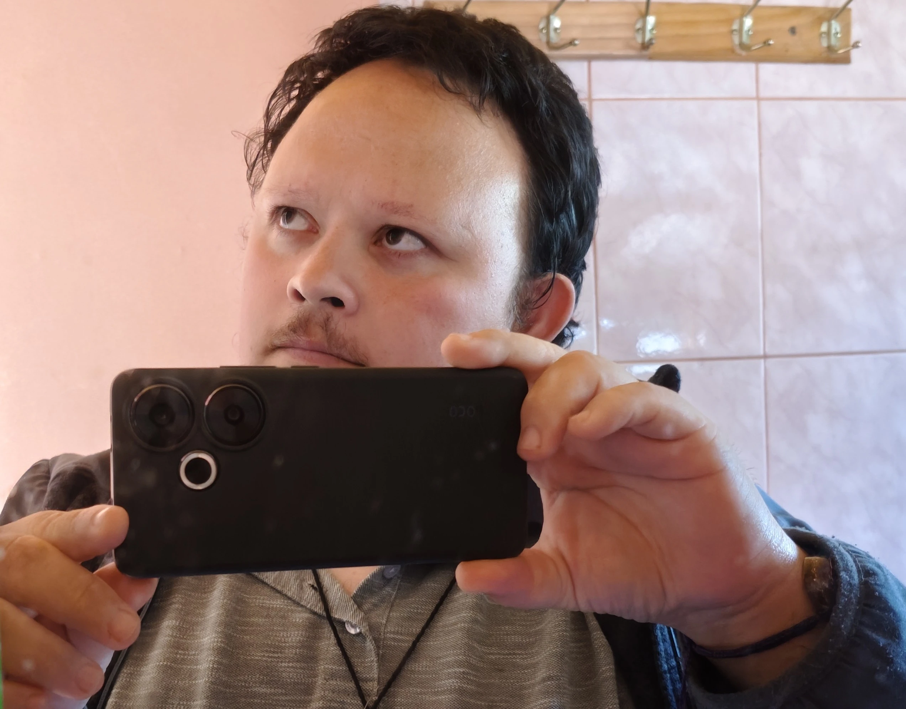

Encuentra Claridad bajo la Luz de los Arcanos
Descubre los mensajes que el universo tiene para ti a través del Tarot, el Péndulo y la Cartomancia. Respuestas sinceras para guiar tu camino.
Oráculo Diario
Permite que los arcanos guíen tu energía en este momento
Tu Carta del Día
Haz clic para revelar el mensaje de los arcanos
El Sol
Al DerechoLa claridad, el éxito y la vitalidad iluminan tu camino hoy.
Nuestras Lecturas
Herramientas sagradas para conectar con tu intuición y el destino
Lectura de Tarot
Una ventana profunda a tu presente, pasado y futuro. Ideal para decisiones complejas en el amor, trabajo o crecimiento personal.
- Tirada general o específica
- Consejo de los arcanos
- Formato online interactivo
¿Buscas orientación en un momento clave? Conversemos
Resolvamos tus dudasLectura de Péndulo
Respuestas claras y directas a preguntas de sí o no, limpieza energética y orientación sobre bloqueos en tu camino.
- Respuestas precisas y directas
- Medición de energías
- Orientación rápida
¿Tienes una pregunta específica? Pregúntame sin miedo
Consultar por WhatsAppCartomancia
El arte tradicional de la adivinación a través de los naipes. Descubre los mensajes cotidianos y los eventos próximos que marcarán tu semana o mes.
- Interpretación tradicional
- Mensajes claros y cercanos
- Predicciones a corto plazo
¿Quieres descubrir el mensaje que las cartas tienen para ti hoy? Escríbeme
Consultar por WhatsApp¿Cómo Funciona?
Un proceso simple, transparente y confidencial en 3 pasos
Elige tu Lectura
Revisa nuestros servicios de Tarot, Péndulo o Cartomancia y selecciona el que mejor se adapte a lo que buscas hoy.
Escríbeme por WhatsApp
Contáctame directamente por el botón, cuéntame tu inquietud o la temática que deseas consultar y coordinamos.
Recibe tus Resultados
Te enviaré fotos detalladas de tu tirada junto con audios explicativos profundos para que los escuches cuando quieras.

Hola, soy Matías Suazo
Lector de tarot, péndulo y cartomancia.
Mi misión es entregarte un espacio seguro, libre de juicios y lleno de luz para ayudarte a descifrar los mensajes que el universo tiene preparados para ti. A través de los años, he perfeccionado mi conexión con las cartas y las energías sutiles para brindarte respuestas certeras.
Cada consulta es única y está diseñada para empoderarte, darte paz mental y mostrarte las mejores opciones cuando sientes que el camino se nubla.
Preguntas Frecuentes
Todo lo que necesitas saber antes de tu consulta
¿Qué es una lectura de Tarot?
Es una herramienta de autoconocimiento y guía espiritual basada en arcanos mayores y menores. Te permite comprender tu situación presente, entender lecciones del pasado y visualizar caminos posibles para tu futuro.
¿Qué es una lectura de Péndulo?
Es un arte de radiestesia mediante el cual, a través de movimientos sutiles de un péndulo sobre tablas o gráficos, se obtienen respuestas directas y precisas (sí/no) además de medir y orientar energías bloqueadas.
¿Qué es una lectura de Cartomancia?
Es el arte tradicional de interpretar naipes comunes u otros mazos simbólicos. Ofrece mensajes muy certeros y cercanos sobre los acontecimientos cotidianos y situaciones a corto plazo.
¿Cómo se realizan las lecturas?
Las lecturas son online a través de WhatsApp. Te envío fotos detalladas de tu tirada junto con audios o explicaciones profundas para que puedas escucharlas las veces que necesites.
¿Cómo agendo y realizo el pago?
Es muy fácil. Me escribes directamente al botón de WhatsApp, coordinamos el tipo de lectura que necesitas y te indico los métodos de pago disponibles.
¿Qué necesito para empezar?
Solo necesitas tener una pregunta clara en mente o la disposición de recibir el mensaje general que el universo tenga para ti en este momento de tu vida.
Testimonios y Experiencias
Comparte tu experiencia tras tu lectura, o consulta las vivencias de otros consultantes
✨ Ordena los testimonios por valoración: